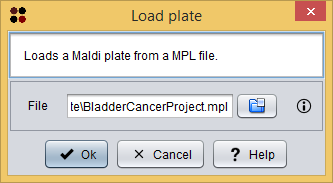

This operation allows you to a Maldi plate from a MPL file.
Maldi plate MPL file
This option allows you to a Maldi plate from a MPL file. This MPL can be created using the Maldi plate editor to store the Maldi plate.
Usage
You can execute this operation by clicking the menu option Load/Load Maldi plate or the toolbar button.
A dialog will appear allowing you to choose the MPL file containing Maldi plate.

Load Maldi plate dialog
After clicking the Ok button, the loaded Maldi plate is added as a Maldi plate datatype to the clipboard and automatically opened in the Maldi plate editor.